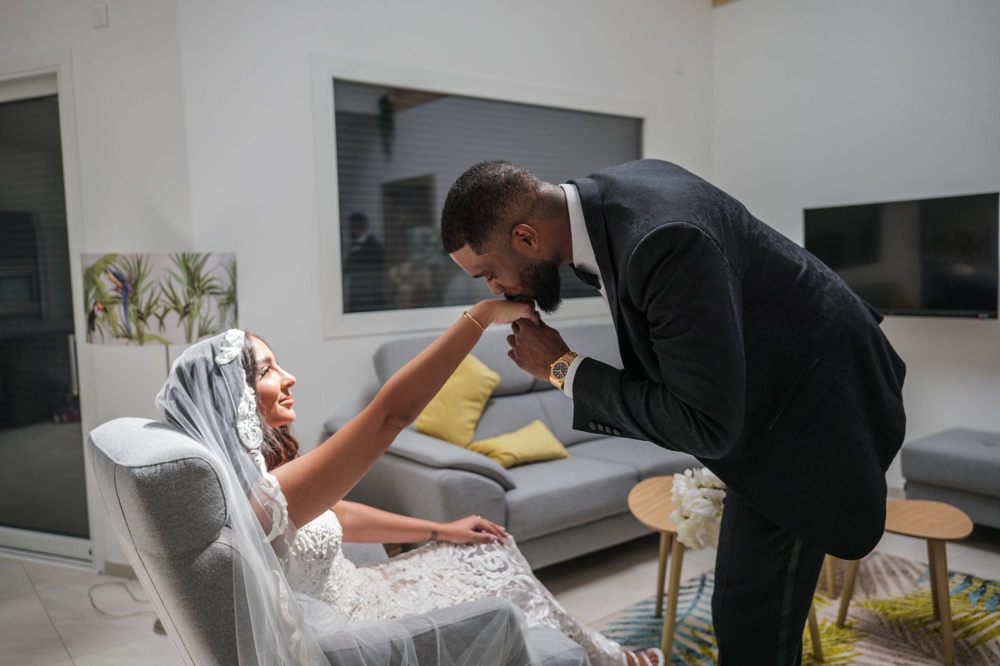
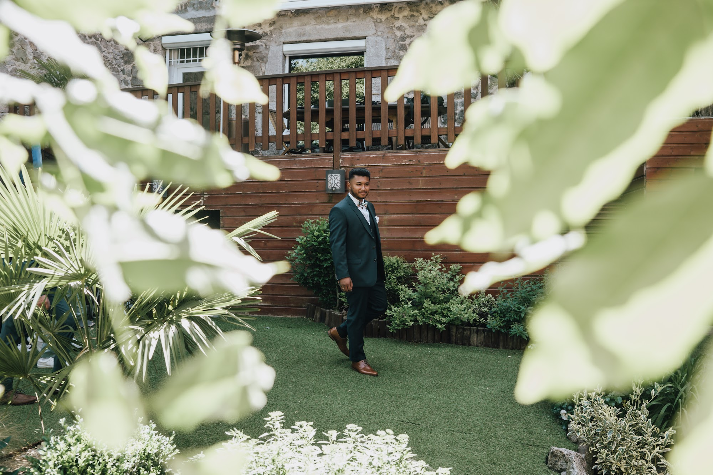
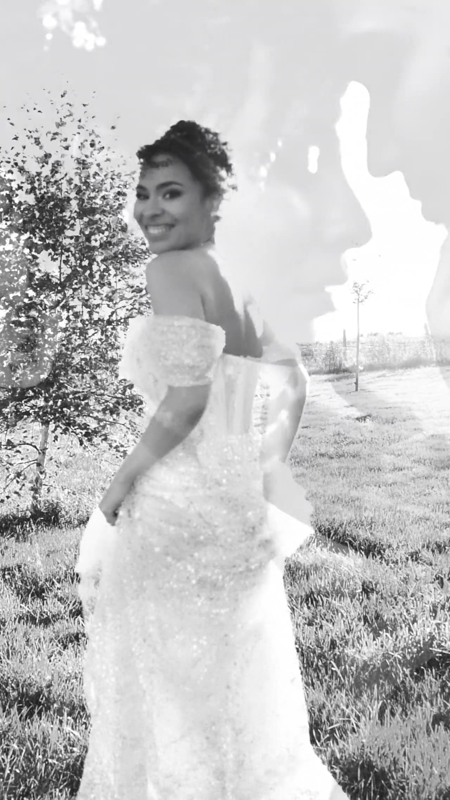
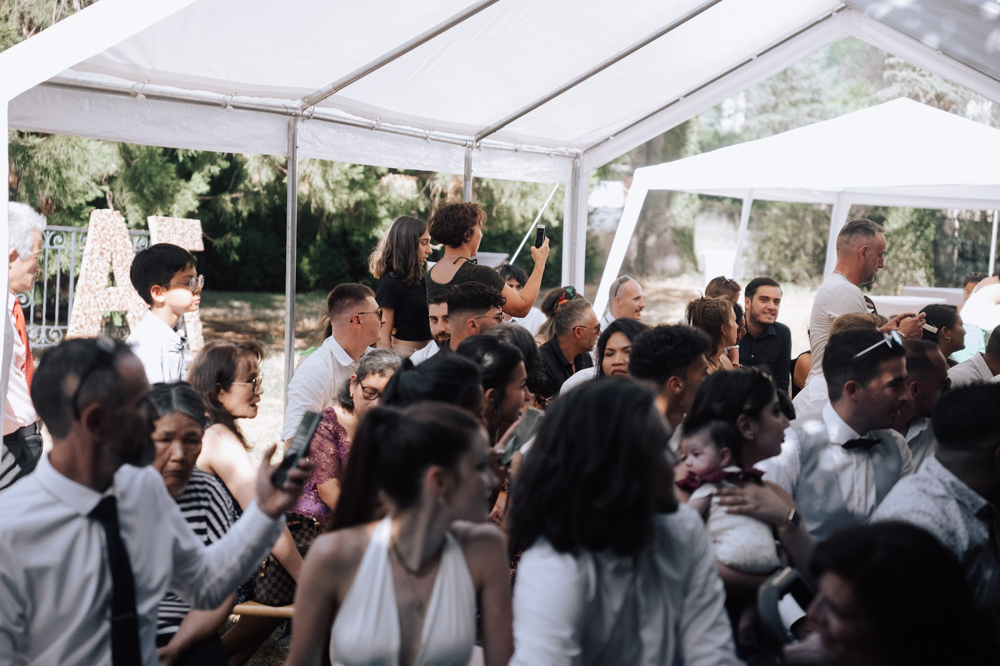

Le premier regard mariage : pourquoi il change toute votre journée
Le moment où vous vous voyez pour la première fois dans vos tenues reste l'un des instants les plus intenses de la journée. Organiser un premier regard mariage avant la cérémonie modifie profondément la façon dont vous allez vivre les heures suivantes. Je vous explique comment cette parenthèse à deux redéfinit le rythme de vos célébrations et apaise la tension des préparatifs.

Une bulle de calme avant l'effervescence
La matinée d'un mariage suit souvent un tempo rapide. Les coiffeurs s'activent, les proches vont et viennent dans la chambre, les tenues s'enfilent avec une certaine hâte. La pression monte doucement à mesure que l'heure de la cérémonie approche. Choisir de se voir avant tout le monde permet de créer une véritable rupture dans cette frénésie. C'est un instant suspendu, loin de la foule, où le bruit retombe d'un coup.
Lorsque vous vous retrouvez seuls, la tension accumulée pendant les préparatifs s'évapore. Il n'y a pas de regards braqués sur vous, pas d'attentes extérieures. Vous avez le droit de pleurer de façon décomplexée, de rire aux éclats, de vous enlacer longuement ou d'admirer les détails de vos tenues. Ce huis clos intime vous ancre dans l'instant présent avant d'affronter le regard de vos dizaines d'invités.

Comment s'organise techniquement ce first look
La mise en place de cette rencontre demande une certaine discrétion. Je repère toujours un endroit isolé, à l'abri des regards de la famille ou des amis qui commencent à arriver sur le domaine. J'y place l'un de vous, souvent dos à l'arrivée de l'autre. Le silence de ce moment amplifie chaque son. Le bruit des pas sur les graviers, le frottement du tissu d'une robe, la respiration qui s'accélère. Ces détails sonores construisent l'émotion de la scène.
Je vous guide simplement sur l'endroit où vous placer par rapport à la lumière naturelle, puis je m'efface totalement. Il n'y a aucune mise en scène artificielle. Le tapotement sur l'épaule, le visage qui se retourne, les premiers mots échangés vous appartiennent. Mon rôle consiste à capturer ces fractions de seconde avec justesse, en vous laissant tout l'espace nécessaire pour vivre votre first look sans vous sentir observés.
Une séance couple mariage apaisée et lumineuse
L'un des atouts majeurs de cette rencontre matinale réside dans la gestion du temps. En enchaînant directement avec votre séance couple mariage, vous profitez d'une fraîcheur absolue. Le maquillage vient d'être terminé, les tenues sont impeccables et l'émotion de la découverte est encore palpable sur vos visages. Vous êtes totalement connectés l'un à l'autre.
Nous prenons alors vingt à trente minutes pour flâner dans les environs. Pas de précipitation ni de peur de faire attendre les invités, puisqu'ils ne sont pas encore arrivés ou patientent avant la mairie. Nous utilisons la lumière du jour, souvent en cherchant de belles ombres sous des arbres feuillus ou le long d'un mur en pierre ancienne pour adoucir les contrastes. Cette session devient une promenade tranquille plutôt qu'une obligation insérée au forceps dans le planning.

Le choix du décor en Auvergne-Rhône-Alpes
Le lieu où se déroule cette rencontre donne la tonalité visuelle de vos premières images. En tant que photographe de mariage à Lyon, je cherche souvent des cadres qui offrent à la fois intimité et esthétisme. Cela peut être la cour pavée et ombragée d'un domaine dans le Beaujolais, le salon feutré aux boiseries anciennes d'un château dans les Monts d'Or, ou encore un chemin forestier isolé en Isère.
La région offre une diversité de décors qui s'adaptent à l'ambiance de votre journée. Si vous vous préparez dans un chalet en Savoie ou en Haute-Savoie, une terrasse en bois face aux montagnes crée un cadre saisissant. Dans la Drôme ou l'Ardèche, l'ombre d'un grand chêne ou une allée de cyprès apporte une touche méditerranéenne. L'important reste de trouver un espace où la lumière naturelle enveloppe vos silhouettes sans vous éblouir.

L'entrée à la cérémonie perd-elle de son intensité ?
C'est la crainte la plus fréquente lorsqu'on aborde ce sujet. Beaucoup redoutent que le fait de s'être déjà vus annule l'émotion de l'entrée à la mairie, à l'église ou lors de la cérémonie laïque. Dans les faits, l'expérience prouve que les deux moments génèrent des émotions totalement distinctes, mais tout aussi fortes.
Le premier regard est intime, silencieux et centré uniquement sur vous deux. L'entrée à la cérémonie, en revanche, est un moment de partage collectif. Quand vous remontez l'allée au bras d'un parent, avec la musique qui résonne et les regards bienveillants de tous vos invités tournés vers vous, l'énergie est complètement différente. Vous marchez l'un vers l'autre avec une complicité renforcée, débarrassés de l'anxiété du matin, prêts à vivre pleinement cet engagement.

Profiter de vos invités lors du cocktail
Organiser les portraits de couple avant la cérémonie libère un temps précieux pour la suite de la journée. Habituellement, la séance photo se déroule pendant le vin d'honneur. Cela implique de s'éclipser pendant que vos invités savourent les premiers fours et trinquent à votre santé. Vous manquez une partie des discussions et de l'ambiance détendue de la fin d'après-midi.
En ayant déjà réalisé vos portraits, vous arrivez au cocktail l'esprit léger. Vous pouvez saluer chaque personne, goûter les pièces montées par le traiteur, écouter un groupe de musique jouer en direct dans un jardin de l'Ain ou sur une terrasse du Rhône. Je reste bien sûr présent pour capturer quelques images spontanées de vous deux au milieu de la fête ou vous voler cinq minutes au coucher du soleil pour profiter de la lumière dorée de fin de journée, mais le gros de la séance est derrière vous.

Mon approche pour photographier cette rencontre
Ma présence doit se faire oublier pour que votre échange reste authentique. J'utilise souvent des focales longues qui me permettent de me tenir à bonne distance. Je me place de façon à inclure des éléments du décor au premier plan, comme des feuillages ou l'encadrement d'une porte, ce qui donne une sensation de profondeur et renforce le côté intimiste de la scène.
Je ne vous demande jamais de refaire un geste ou de regarder l'objectif. Si vous avez besoin de cinq minutes pour vous parler doucement, vous asseoir ou simplement respirer ensemble, je continue de documenter la scène sans intervenir. Ces images brutes, où vos mains tremblent légèrement et où les sourires traduisent un soulagement sincère, font souvent partie des photographies les plus chères à mes clients.
Questions fréquentes
Combien de temps dure un premier regard mariage ?
Le moment de la découverte en lui-même ne dure que quelques minutes. Je conseille d'y associer directement la séance de portraits de couple, ce qui demande de prévoir une plage horaire totale de trente à quarante-cinq minutes dans votre planning matinal.
Faut-il organiser le first look à l'intérieur ou à l'extérieur ?
Les deux options sont possibles selon la configuration des lieux et la météo. Un bel escalier ancien ou un salon aux grandes fenêtres offre un rendu très élégant en intérieur. En extérieur, on privilégie une zone ombragée pour éviter une lumière trop dure sur vos visages.
Pouvons-nous échanger des vœux privés pendant ce moment ?
Absolument. Beaucoup de couples profitent de ce huis clos sans micro ni invités pour se lire une lettre ou échanger des mots personnels. C'est une excellente alternative si vous êtes pudiques et préférez ne pas prendre la parole devant une grande assemblée lors de la cérémonie laïque.
Pouvons-nous refaire des photos de couple plus tard dans la journée ?
Oui, et je le recommande fortement. S'éclipser dix minutes pendant le repas ou juste avant la fin du cocktail permet de profiter de la lumière rasante du crépuscule. L'ambiance y est plus festive et détendue, ce qui donne un style d'images différent de la séance du matin.
Vous souhaitez organiser votre journée de façon fluide et sereine ? Parlons de la manière dont nous pouvons intégrer ce moment intime dans le planning de votre mariage.
Parlons de votre projet